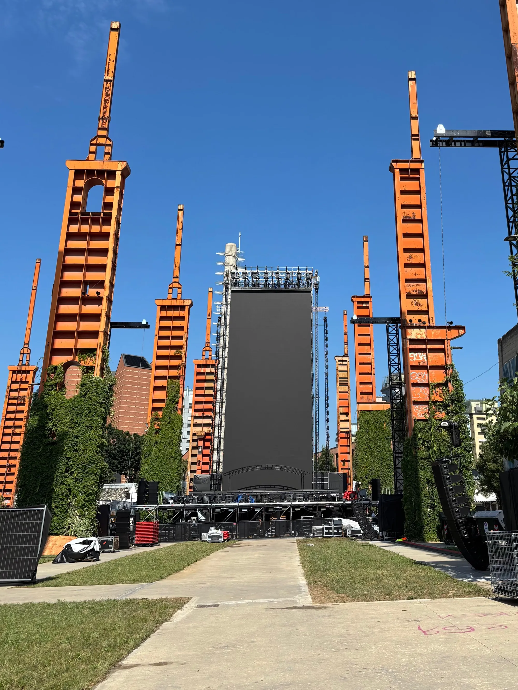

Access, Shipping & Accreditation
KAPPA FUTURFESTIVAL
In the context of one of the beating hearts of electronic music on a global scale, I take part in the organizational machinery that makes the festival possible. Among the industrial architectures of Parco Dora and the energy of an international audience, I handle access management and shipments during the setup, event, and dismantling phases, as well as coordinating staff accreditation. My role fits into the delicate logistical balance that supports the event, contributing to the transformation of urban space into a large shared stage of music, people, and movement.